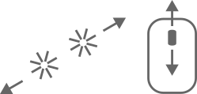
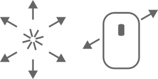

Virtuelle Sektormodelle
Hilfe
|  | Zomme hinein oder hinaus |
|  | Bewege den Blick auf die Arbeitsfläche |
 |
Kehre zur Auswahlseite zurück |
 |
Beginne von vorn |
| Setze die Sektoren in ihre Ausgangsposition zurück | |
| Entferne das zuletzt gezeichnete Liniensegment | |
| Zeichne ein neues Liniensegment oder setze ein bestehendes fort | |
| Füge ein Geodreieck ein | |
 |
Berechne die Fläche eines Sektors |
 |
Zeige die Vertizes eines Sektors |
 |
Lösche die ausgewählte Linie |
| Setze die Sektoren entlang der Startrichtung der gewählten Geodäten zusammen | |
| Verändere die Startrichtung der ausgewählten Linie – sie wird automatisch als Geodäte vervollständigt | |
 |
Vervollständige die gewählte Linie als Geodäte |
 |
Setze den Zoom und den Blick auf die Arbeitsfläche zurück |
| Speichere ein Bild deiner Arbeitsfläche | |
 |
Starte den Vollbildmodus |